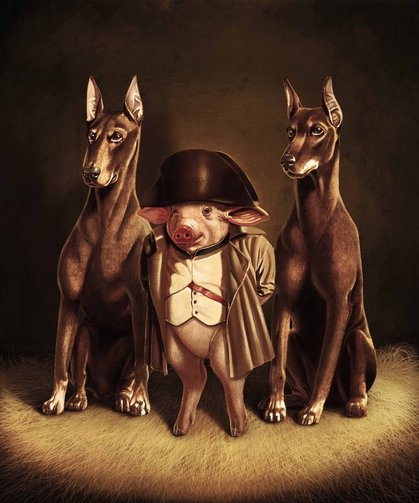
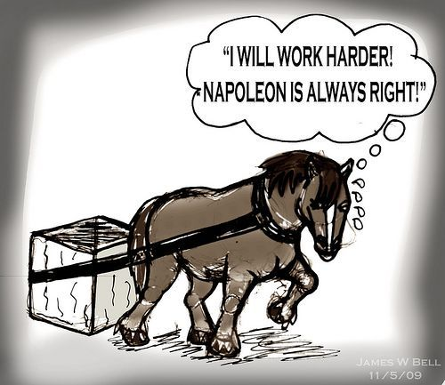
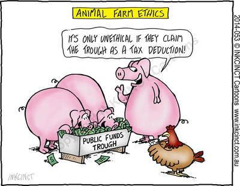
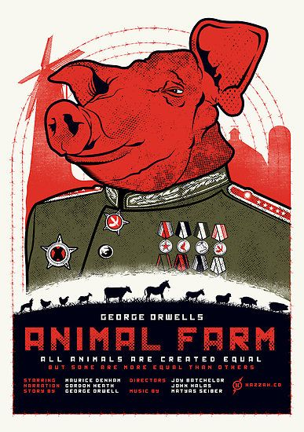

The Theme of the Story:
- The main theme of the story is the corruption in the socialist goverment in Soviet Russia.
- These other themes include: Power, Gullibility of the Working Class, The Maltreatment of Animals by Humans, etc.
- Power: the power that Napoleon acquired was truly unprecedented in the first few chapters it was almost amazing how well he managed to fool everyone for his own benefit.
- Gullibility of the Working Class: the fact that no one in the working class doubted or rebelled against Napoleon was amazing, the only person that could've saved them was Benjamin.
- The Maltreatment of Animals by Humans: the animals in Animal Farm found the necessity to rebel against the humans just because they were being maltreated.
- The corruption of the communist goverment is important because it represents the foundation of which the inequality between working class and the rich is based.
- Another theme in the story is the abuse of actual language, most animals didn't know how to read or write so the smart ones, like the pigs could get away with fooling everyone.
Napoleon in Power With His Dogs
The Working Class Gullibility
The Corruption in Animal Farm



